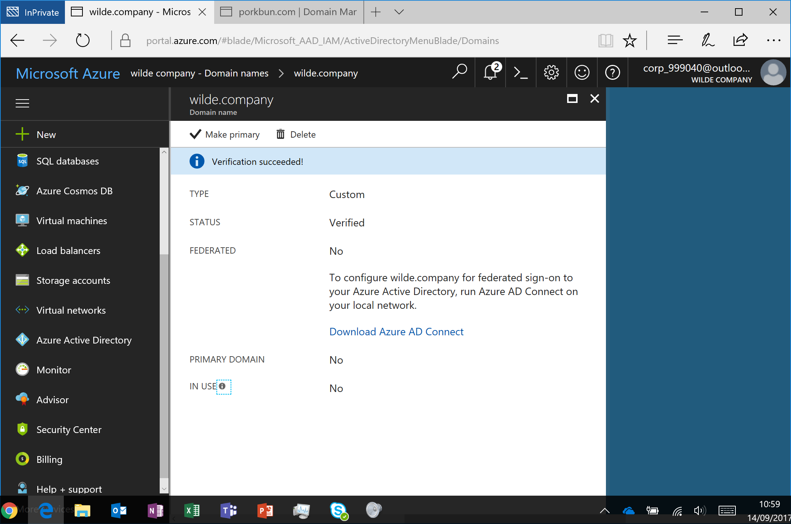

Extending Identities to the Cloud.
Create Azure Active Directory
Next we need to create a new Azure Active Directory Tenant. I will be creating a tenant called wilde.company (this is a public domain that I own), if you do not own a public domain and are completing this lab as a learning exercise then you will not be able to verify the domain, don’t worry and continue as normal.
- Log into the Azure Portal as a Global Administrator New > Security + Identity > Azure Active Directory

- Enter the new directory details, Organisation name (just a reference point), Domain name (AKA tenant), Region > Create
My settings are below but you can customise it relevant to you:
- Organization name - Wilde Company
- Initial domain name - WildeCompany (notice suffix on my domain WildeCompany.onmicrosoft.com this needs to be unique)

- Switch to the directory you just created (either by clicking on your account in the top right OR by going to Azure Active Directory > Switch Directory). If the new directory isn’t there, try pressing refresh on your browser.

- Now we need to add the public domain you own to link to your new tenant *.onmicrosoft.com, Domain Names > Add domain name
Please skip this step if you do not own a public domain

- Add domain name
I have added the domain name I own wilde.company but you can add one you own (e.g. microsoft.com, yourcompany.co.uk, example.org)
Please skip this step if you do not own a public domain

- Once the domain has been added, prepare to copy the details provided, do not click verify just yet.
Please skip this step if you do not own a public domain

- In a new browser tab, log into your domain’s DNS settings and add a TXT record with the details from the Azure Portal (see previous screen shot).
Please note - I’ve used porkbun.com to purchase and configure a domain but all the domain configuration portals will have a section to add a TXT record. Notice the host name and answer from previous screenshot match. DNS record updates can take up to 48 hours to take effect, but they often take effect much sooner and for me it was instant.
Please skip this step if you do not own a public domain

- In the Azure portal Verify > Success.
Please skip this step if you do not own a public domain

Now we have created a new unique Azure Active directory tenant and linked the new tenant *.onmicrosoft.com to your public domain. The screenshots show I have created and linked an Azure Active Directory tenant wildecompany.onmicrosoft.com to the public domain I own wilde.company.
e.g:
- wilde.company > wildecompany.onmicrosoft.com
- microsoft.com > microsoft.onmicrosoft.com
- yourcompany.co.uk > yourcompany.onmicrosoft.com
- example.org > example.onmicrosoft.com
Move onto the next lab Prepare Active Directory.